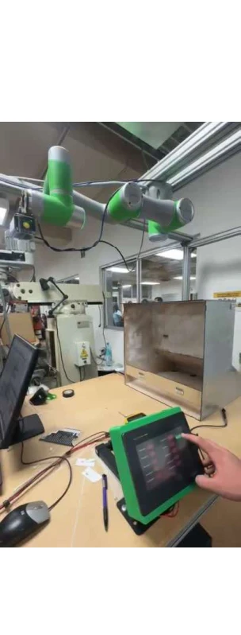

Explanatory schematic · not original CAD
In progress
Patient-table inspection automation
Developing communication and coordinated control for automated patient-table inspections.
OPC UAUAExpertSIMATIC S7-1500TIA Portal
Explore case study I'm Diego, a mechatronics engineering student working across industrial automation, robotics and functional prototyping.
Currently developing my bachelor thesis at Siemens Healthineers in Germany.
Professional work and academic collaborations, with my contribution and the status of each outcome made explicit.
8 projects
Developing communication and coordinated control for automated patient-table inspections.
Led project coordination and technical development of a positioning proof of concept, delivering two motorized demonstrators.
 Original project photograph · Academic team project
Original project photograph · Academic team projectWorked on the base-assembly workstation of a collaborative automated production line.
 Original project simulation · Academic team project
Original project simulation · Academic team projectLed an academic packaging and palletizing proposal supported by robot simulation and technical evaluation.

Original project photograph · Academic team projectCombined cobot handling, vision and PLC/HMI logic in an academic inspection demonstration and workstation proposal.
 Original project photograph · Academic team project
Original project photograph · Academic team projectBuilt a team prototype combining embedded control, encoder feedback and remote operation.
 Original project photograph · Academic team project
Original project photograph · Academic team projectDesigned and prototyped a holder intended to improve torch handling and reduce exposure to burn risks.
Combined L1 troubleshooting with case documentation, an Excel knowledge database and an AI-assisted retrieval proposal.
Academic collaborations are coursework projects, not employment with the named organizations. Project photographs and simulation screenshots come from academic team presentations. Generalized diagrams are labeled separately; professional project imagery remains confidential.
I study Mechatronics Engineering at Tecnológico de Monterrey and Electrical Engineering at Hochschule Zittau/Görlitz through the German–Mexican DHIK double-degree program.
I enjoy connecting mechanical design, control logic and physical testing—and explaining technical work clearly to the people involved.
My experience spans functional demonstrators, robotic assembly, inspection concepts and technical support tooling.
Siemens NX · SolidWorks
Assembly & fixture design
3D printing · Rapid prototyping
Material selection
TIA Portal · S7-1200 / S7-1500
WinCC HMI · ABB RobotStudio
KUKA · AUBO · PLC–robot coordination
Digital-twin evaluation
OPC UA · UAExpert · PROFINET
Arduino · STM32 · PID
Python · C / C++
REST / JSON tooling
Requirements & concept evaluation
Prototype testing
Stakeholder demonstrations
Technical documentation & handover
Siemens Healthineers · Kemnath, Germany
S7-1500 PLC and Siemens HMI development, OPC UA testing and AUBO i-20 coordination for patient-table inspection; ongoing work in the assembly-line environment.
Siemens Healthineers · Kemnath, Germany
Main project coordination, team concept development, NX design, 3D printing, functional prototyping, stakeholder demonstrations and technical handover.
VusionGroup · Mexico City, Mexico
Electronic shelf-label diagnostics, structured case documentation and a searchable Excel knowledge database.
Tecnológico de Monterrey · Mexico
DHIK double-degree program · GPA 92/100 · Expected graduation December 2027.
Hochschule Zittau/Görlitz · Germany
German–Mexican double-degree studies with a current focus on automation and industrial integration.
Led a 30-member team and coordinated budget and logistics for an engineering congress with 300+ attendees.
Guided the VOLTEC high-school team in mechanical, electrical and pneumatic subsystems during 2024.
Spanish: native · English: C1 · German: A2, ongoing study. Former varsity goalkeeper at PrepaTec / Tec.
Interested in opportunities in automation, robotics, mechanical design and mechatronic development.